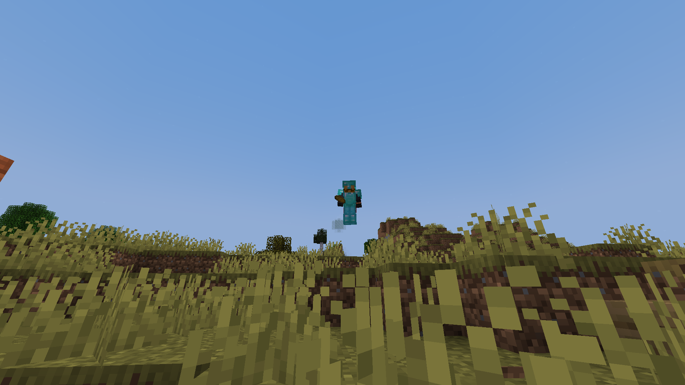

De "Flying Dutchman"

Een Vliegende Man;
Op Zondag was er tussen 2 en 3 het zogenoemde fenomeen:"The Flying Dutchman" te zien! Hij vliegde rond Eva's Steiger en andere hoge kliffen, want dat scheen leuk te zijn, van kliffen af springen
Wie is die onbekende vliegende man?
Een grote vraag is:"Wie is die 'Flying Dutchman' nou toch?" Daar hebben wij, reporters Joellizzy en _atheron_ een antwoord op, want als je omhoog kijkt, ja in de lucht, zie je een naam! De naam van deze knaap was: "AFILyingDutchMan"
Hoe vliegt hij?
Dit, dames en heren is nog steeds onbekend, er is een onderzoek gaande naar hoe deze man kan vliegen, maar het is nog niet heel ver. Wij zullen u blijven updaten over mogelijke gebeurtenissen die met deze knaap te maken hebben. Stay Safe Out There!
Aldus, de Reporters Joellizzy en _atheron_ van de Gekkies Krant